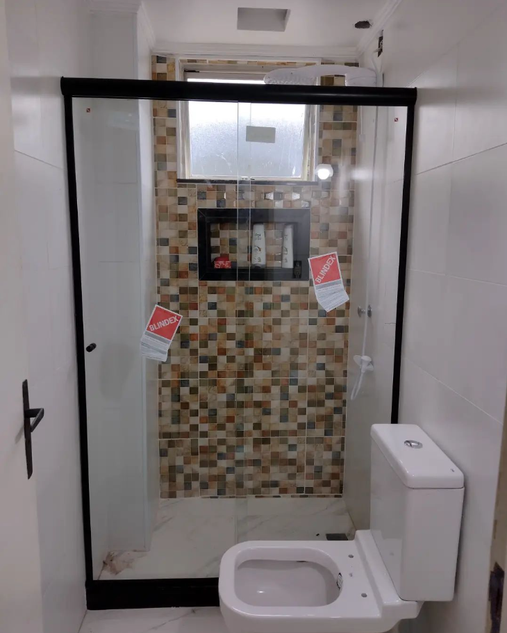
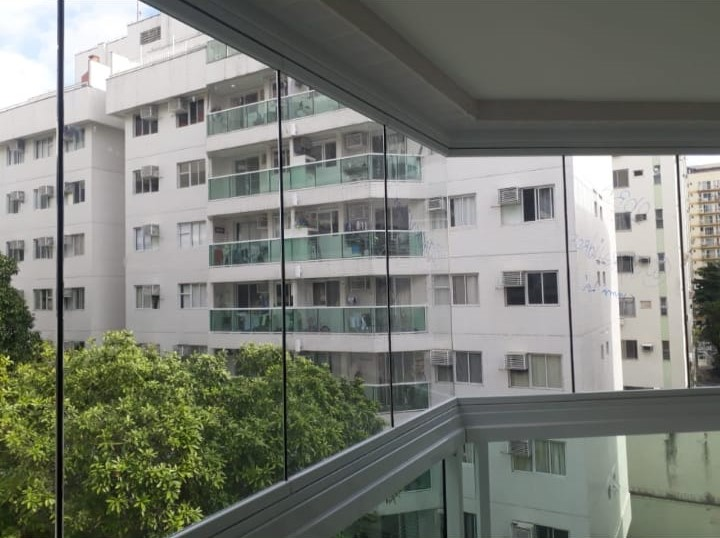
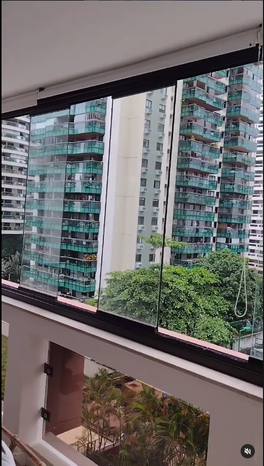
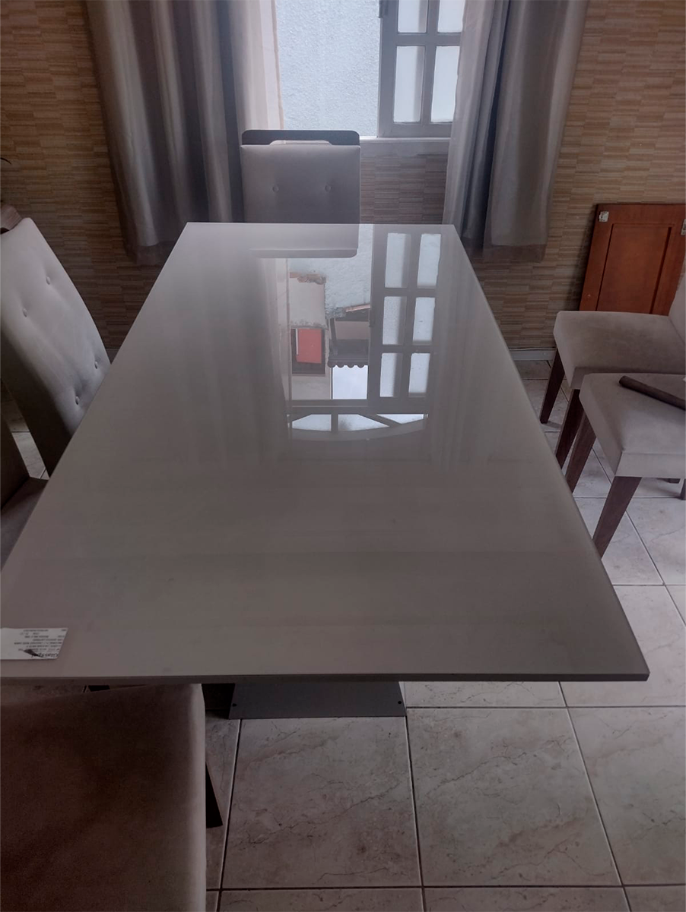

Conheça nossos outros serviços
1. Box Elegance
Transforme o seu box de banheiro em um espaço aconchegante e sofisticado com o Box Elegance. A opção do Tubo Oblongo deixa o ambiente moderno e foi criado especialmente para manter uma padronização de todas linhas com roldanas aparentes, sendo usado no Elegance, Due e Encanto
2. Espelho Guardian
Com uma fórmula inovadora, o Espelho Guardian Evolution é uma nova geração de espelhos, com uma super camada de proteção, que garante muito mais resistência a manchas e a riscos. Tudo isso com um processo produtivo ecologicamente correto e totalmente livre de metais pesados (cobre e chumbo).

3. Cortina de Vidro
As cortinas de vidro, muito utilizadas em residências de regiões litorâneas, podem ser uma ótima opção para aplicação em locais urbanos. Além de proporcionar um aumento da área social, a cortina de vidro garante iluminação e circulação de ar, além de uma vista mais livre e charmosa.
4. Versatik Division
Permite que várias folhas de vidro corram pelo mesmo trilho e recolhem atrás de um vidro fixo, sistema inovador da Tec-vidros chamado mão amiga e também o sistema acesso livre sem guia inferior e acessibilidade para cadeirantes

5. Kit Sacada
O fechamento de sacada é a técnica de envidraçar a área externa e aberta, como a varanda e até um quintal. Dessa forma, é possível aproveitar melhor o espaço, integrando-a com a sala de estar ou de jantar, transformá-la em um espaço de descanso ou até uma brinquedoteca.
6. Tampão para Mesa
O tampo de vidro para mesa caracteriza-se como algo não só funcional, mas também possui um alto valor quando pensado na decoração de um ambiente. Uma mesa de jantar produzida em vidro valoriza e eleva a estética de mesas de diversos tipos e estilos.
